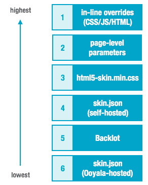

Player V4 provides many options for customizing the player experience. Where the same
configuration setting (for example, player background color) is controlled by different
mechanisms, it is important to understand which mechanism prevails and appears to the viewer
during playback. See
Customizing the Player V4 Appearance for background.
The following figure shows which settings take precedence in priority order (1 = highest
priority).

Configuration Options
You can configure playback experience using the
following mechanisms.
| Mechanism |
More Information |
| Player Skin (skin.json) |
|
| Backlot |
|
| CSS |
|
| Page-level parameters |
|
| Inline overrides on the web page (CSS/JS/HTML) |
Skin and CSS overrides |
Default Settings and Overrides
Every mechanism has default settings that
you can override by changing their default values.
Precedence Depends on Where Skin Resources are Hosted
Where player settings overlap across mechanisms, precedence is conditional based on where the player skin is hosted.
For example, if the default player color is orange in Backlot and blue in skin.json, the prevailing color (during playback) depends on where skin.json is hosted.
- If Ooyala hosts your skin.json file, then the viewer will see orange.
- If you host your skin.json file, then the viewer will see blue.
- If you have no settings anywhere, the core default will set a color.